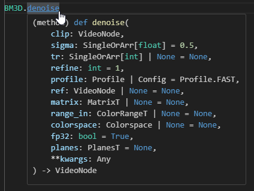

A Primer on Python
Attention
This is NOT a full guide to using Python, and does NOT go into too much depth. This is meant to be a high-level guide to ease learning enough Python to use Vapoursynth with impunity. For more in-depth guides, consult the additional resources section!
Getting started with Vapoursynth can seem daunting at first, as it means learning how to write Python scripts. The good news is that Python is one of the simplest programming languages to learn, and you only need to grasp the basics to start filtering videos with Vapoursynth and JET packages.
Basic syntax
Python is a high-level, interpreted language that emphasizes readability. Its basic syntax is designed to be intuitive and easy to understand, making it accessible even for beginners.
Variables
Variables are a fundamental concept in programming that allow you to store and reference values in your code. Here’s a simple example:
In this example:
ais a variable that holds the number 1.bis a variable that holds a piece of text, also known as a "string", which is "example text."
Now, let’s see how this translates to a VapourSynth script. At the beginning of every script, you need to load a video file and assign it to a variable so you can use it throughout your script.
In this example:
- We use the
VideoSourcefunction from thebsmodule to load a video file named "a video file.mp4". - We assign the loaded video
to the variable
src.
Note
There are several common conventions
that many VapourSynth scripts follow.
One example is using the variable name src
to represent the source video.
Following these conventions is highly recommended,
especially when seeking support,
as it makes it easier
for experienced VapourSynth users
to understand the code
and assist you!
While writing your script, you should be mindful of the variables you write. A common mistake beginners make is to use an older variable when they've filtered a clip and assigned it to a different variable. Take for example:
The user is passing src
to vfm.VDecimate,
when what they likely intended to do
was to pass ivtc to it instead.
While it's widely considered good practice
to use different variables
for different filtering operations
(as it makes it easier
to compare multiple filtered clips),
you have to be careful
that you assign
the correct clip
to the function you're calling.
This is how it should be called instead:
Values
When using functions, you'll often need to pass specific values or parameters. An example of this is the built-in cropping plugin:
The std.Crop function
is used to crop a video clip.
It takes parameters for each direction
you want to crop.
Looking at the VapourSynth documentation,
it says the function
can be called like this:
Let's pick this function apart:
- The first parameter is called
clip, and needs to be avnode. This is also known as aVideoNode, and just means a video clip. - Every parameter after this is optional, which is denoted by the square brackets.
- There are four additional optional arguments,
called
left,right,top, andbottom. Each of them expects an integer value. By default, the value "0" is passed to them.
For example,
if we want to crop 100 pixels
from the top and right sides
of the src clip
we loaded earlier,
we would pass the following parameters
to std.Crop:
You can also pass parameters by their position, though it's oftentimes clearer to specify them by name:
A lot of functions don't require you to pass values for it to return something, but in most cases, you'll want to fine-tune these parameters for your source.
Using an IDE like Visual Studio Code can help you understand what values to pass by showing expected parameters for functions. IDEs can display parameter names, their types, and default values if the package is properly type-hinted. This is especially true for JET packages, which include type hints.
Below is an example
of how Visual Studio Code
can display the expected parameters
for BM3D.denoise:

Type-Hinting
Not all packages are type-hinted. Without type hints, an IDE may not display the types of parameters expected by a function.
Here’s a quick guide to common types of values you might encounter:
| Type | Explanation | Notes |
|---|---|---|
| Integer | A round number, like 1, 100, 623, etc. | |
| Float | A decimal number, like 1.0, 5.2, 236.523, etc. | |
| String | A piece of text encompassed by (double) quotes. For example, "this is a string". | |
| List | A collection of values. May be annotated with the type of values inside it, e.g., list[int]. | Sometimes called an Array |
| Dictionary | A collection of key/value pairs, e.g., {"name": "value"}. |
JET also uses custom types
like Kernels,
which need to be imported
and created
as per the package guidelines.
If you need help,
resources are often available
in documentation
or community servers
like the JET Discord Server.
Installing and importing packages
To use JET tooling and other Python packages, you'll need to install them using pip, Python’s package installer. For detailed steps, refer to the setup guide.
Once installed,
you can import packages
into your Python script
using the import statement.
There are a couple of ways to do this,
depending on
how you want to access
the functions
from the package.
If you want to import specific functions,
use the from x import y syntax:
This makes the get_y function available
to be used directly:
You can import multiples functions at once with this syntax:
You can also import the entire package:
When using this method, you need to reference the function through the package:
You can also assign a custom namespace to your imports for brevity or clarity:
Custom namespaces
Using custom namespaces may make your code cleaner and easier to read for you, but do keep in mind that it may make it more difficult for experienced VapourSynth users to properly support you if you run into any issues!
Miscellaneous information
Some quirks or common VapourSynth script practices don't fit into any one category, so we'll discuss them here.
Different ways to call a plugin
core is used for loading plugins.
In previous examples,
you may have seen it used like so:
It's not uncommon for script authors to call plugin functions directly from the clip. This is faster to write, but may make your script a bit harder to understand sometimes.
Note that if you call a plugin
via this method,
you no longer have to pass a vnode
as the first argument.
This may become a problem
when the plugin expects
a different type
to be passed as its first parameter,
such as std.StackHorizontal:
The square brackets shown here
indicate that it expects
a list of VideoNodes.
Calling src.std.StackHorizontal
will only pass the src clip
as an argument,
making it meaningless
to call the function
with this method.
Additional learning resources
If you want a more hands-on or practical approach to learning Python, there are several valuable resources available.
Here’s a list to get you started:
- The Python Tutorial
- Automate the Boring Stuff with Python by Al Sweigart
- Video tutorials by Corey Schafer